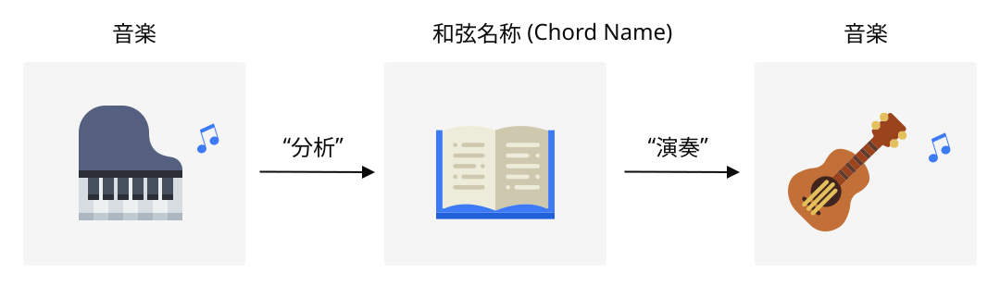

在本文中，表示单音音高时使用小写英文字母，以此与和弦标记区分。用“哆来咪”等唱名表示阶名。
到目前为止，我们主要介绍了近代音乐的拓展技法，最后我们来探讨一些纯理论性的内容。那就是：在复杂情况下如何决定和弦名称（和弦标记，Chord Symbol）。 在第I章阶段，我们确认了将演奏转化为和弦标记时的基本要点。

将鸣响的音切分为“和弦音（Chord tone）”与“和弦外音（Non-chord tone）”，在舍弃多余信息后提炼为和弦标记。但当时还处于刚介绍完“六个基调和弦”的序盘阶段，讲解的内容相当基础。 从那之后我们学习了大量和弦种类，结果在如何确定和弦标记上感到困惑的场景想必也越来越多了。因此，本文的主旨就是尽可能在一篇文章中打消关于和弦标记命名的种种疑问。
本文的难度层次
这里是第V章的收尾，内容具有相当的深度。在键盘上能一眼区分开的初级和弦判别，并不是本文的议题。

我们将探讨比这类区分更加困难、需要人类主观判断层面的案例：
- 当音没有鸣响时，表示省略的“omit”究竟应该写得多细？
- 当既可以写成斜线和弦、又可以写成非斜线形式时，应该选哪一个？
- 等音（异名同音）究竟该如何判别？
可以说，我们将从理论上解剖常见的“和弦名称判定工具”等机器算法所无法判定的维度。
 1. 音乐与和弦标记的关系
1. 音乐与和弦标记的关系
“音乐本身”与“和弦标记”之间存在的关系，大致可以分为两类：“将音乐转换为和弦标记”的行为，以及“将和弦标记转换为音乐”的行为。

但必须认识到：和弦标记削减了声部配置（Voicing）以及细微的演奏信息，因此作为数据其所蕴含的信息量是较少的。 所以在“分析”与“演奏”时，都有人类的主观介入。被人类双手削减信息后化为“和弦标记”的音乐，又通过人类双手填补信息重新还原为音乐。 正如第I章所述，和弦标记的信息应当细致到何种程度，完全取决于目的与场景。
作为分析结果的和弦标记
在音乐分析中，“好的和弦标记”的基本指针应当是：深刻领会作曲者的意图和音乐展开上的意义，并予以精准反映的和弦标记。 对于等音的判定等，大多由细致的用音和上下文语境决定。而和弦标记写得多细，也完全取决于分析的目的。
作为演奏指示工具的和弦标记
另一方面，和弦标记有时也被用来向乐手传达演奏内容。例如在乐队排练演奏自己的原创作品时。用和弦标记而非事无巨细的乐谱向对方传达音乐，意味着将演奏的自由裁量权托付给了对方。

此时的基本指针是“能让演奏不偏离自己初衷的和弦标记”。但由于这与谁来演奏、使用什么乐器、以什么风格参与息息相关，情况往往更为复杂。 如果对方只是“用吉他按照写的和弦扫弦伴奏”，过于繁琐的和弦标记反而会因为按弦困难而令人抓狂。这种情况下某种程度上更偏好简洁的记号，且等音的区别也无关紧要。
相反，如果是“请对方在此处负责即兴独奏”，如果不注意写得精密一些，就有可能出现对方演奏出完全出乎意料的内容的情况。虽然可以通过沟通磨合，但写出不易产生误解的标记总归是最好的。

这样，在明确了情境与目的之后，方针也就自然确定了。根本理念在于：“分析”时的和弦标记是对音乐要点的总结报告；而面向“演奏指示”的和弦标记则是传达给对方的口令信息。这样理解就能把握好恰当的分寸。
源于目的意识差异的例子
尤其是是否将歌曲的旋律部分视作和弦的一部分，这种目的意识的差异表现得尤为明显。

当旋律单独唱出伴奏中没有的音时便是典型。 如果是为了通过音乐分析将这种声音语言化，就应该把旋律音包含进和弦标记中。否则 7th 与 6th 混合的玄妙质感、大七度所带有的忧伤色彩就无法被记录下来。 但如果是为弹唱者编写和弦谱，最好忽略旋律。否则弹奏和弦会变得异常困难，而且如果伴奏与旋律重复了 7th 或 6th，声响平衡也会被破坏。 在各种和弦进行介绍的内容中也是如此。在带有“分析”意味的场合会选择详尽的记号，而在面向吉他弹唱受众的谱例中，则会选择剥离所有引伸音的简洁记号。
2. 7人选拔制度
在进入正题之前，首先需要明确一个前提：现行的和弦标记系统，在根本上基于7个席位的选拔成员制思想。

在上面的和弦中，(9) 确定了 F♯ 的加入，这也同时意味着F♮ 没有被选中。选拔制指的就是这个意思。 也就是说，IIIm7(9) 这个和弦标记在七个音级中指定了“E、G、B、D、F♯” 5个成员，而对于“A、C”则是未指定。

F 与 F♯ 是竞争对手，只能有一人坐在席位上。A 和 C 目前仍是“空席”……以这种 1-7 号席位被填满的意象来理解和弦标记系统会非常清晰。 在实际音乐中，像 E 与 E♭ 这样争夺同一席位的音共同存在、同时鸣响也是有可能的。但对和弦标记系统而言，这属于例外情况与特殊案例。

在这种情况下有时记谱会变得困难，但这些特殊案例我们暂且不谈。 F♯ 被选中，F 就会落选。你可能会觉得这是理所当然的事，但这个认识在思考和弦标记时是一个非常重要的关键点。
“空席”与即兴演奏
这个“空席”部分在即兴演奏时会成为一个重要问题。要在 IIIm7(9) 和弦上进行即兴独奏，作为旋律线条的通道，A 和 C 也会被适时使用。而因为那里的成员尚未确定，就可能出现“意想不到的大提拔”。

既然 F 都升了，顺带把 C 也升了吧！让调性感越来越模糊才爽快！
给出留有空席的和弦标记让别人演奏，在好与坏的两面都意味着留下了这种自由选择的“留白”。如何填补空席，很多时候靠心领神会的默契，而在容易产生歧义的地方也可以事先排练沟通。 在介绍同主音小调和弦（Parallel Minor Chords）时我们也提到过：演奏时最好事先沟通清楚到底要在 E、A、B 中的哪些音上加降号。 带着这个“席位”的概念，我们来逐个分析各种容易混淆的案例。
3. 关于 omit
首先是表示省略音的“omit”。omit 这个词在介绍强力和弦时曾经登场过。
omit3 / 强力和弦的情况
I V VIm IV
特别是在朋克或金属乐中，全曲大半由强力和弦构成是常有的事。在这种情况下，完全无需每次都写“omit3”或者代表强力和弦的“5”，直接视作普通三和弦来写和弦标记是完全可行的。
I V VIm IV
此时如上所示，只要没有特殊提示，就假定其演奏的是符合调式音阶的常规和弦，用 IV、V、VIm 等大家熟悉的和弦属性去补完是最合适的。 在“分析”中，只要区分强力和弦与常规和弦没有特殊的分析意义，采用这种方针就完全没有问题。例如如果第一遍是强力和弦，第二遍加入了三音，想记录这一编曲结构特征时，用“5”这一标记注明即可。 在面向“演奏”时，除非有着“哪怕把乐器换成钢琴或木吉他演奏，也千万不要弹三音，缺少三音的这种声响是有特殊意义的”这种强烈意图，否则不写“5”没有任何问题。
omit5 的情况
完全相同的情况也适用于和弦的 5th。
缺少5th的合奏
如果 5th 是普通的“完全五度”，它就是“无色透明的支撑角色”，在声响上的重要性较低，因此在演奏时是省略的第一候选，这一点我们从第I章阶段就已经讲过了。 在上面的合奏中，只有根音和三音在发声，5th 始终缺席。即使在这种情况下，只要 5th 的缺席没有被赋予特殊含义，通常也不会特意写上 omit5。
omit 的思考方式
这种判断背后的逻辑，从前面提到的“选拔成员与席位”的概念来思考就会非常容易理解。简而言之，omit 并不是表示“音缺席了”，而是作为“特意去掉了音”的标记在发挥作用。 它不是单纯用来传达该音处于“空席”的标记……

并不是这样，而是带有更强烈的意志，仅在想传达该音“禁止入座”时才会使用的标记。

这样的意象更符合实际情况。
- 在分析中 若其他部分很正常，唯独该处抽掉了三音，当你感受到其中蕴含着刻意的表现意义时，和弦标记中就应该包含它。
- 在演奏指示中 若希望其他部分照常，但唯独该处务必去掉三音，想传达这种刻意的编曲构思时，和弦标记中就应该包含它。
因此，作为报告或作为口令信息，omit 是否具有实质意义，是做出判断的分水岭。
4. 是否采用斜线和弦
接下来是：当一个和弦既可以写成斜线和弦、又可以写成非斜线形式时，究竟该选哪一个的问题。两者的区别在于“上方声部（伴奏上层）与低音是否分离”，这似乎完全成了一个主观认识问题。不过从“和弦标记既是报告也是口令”的角度来看，脉络就会清晰起来。
采用斜线和弦的案例

这个和弦进行的特征是低音完全不动，而上方的声部却在丰富地移动，因此可以认为这是有意识运用了第III章中介绍的“踏板音（Pedal Point）”技法。 因此将其转换为和弦标记时，我们选择了如上谱所示的使用斜线和弦的记法。通过这种方式，“低音与上方声部的独立性”被准确地记录了下来。
不采用斜线和弦的案例

而这一个看似相似，实则略有不同。这一次不仅低音不动，上方声部最高的 C 和 E 也是固定的，只有内声部在平滑移动。这理应被视为第IV章开头介绍的“线条陈词（Line Cliché）”技法。 陈词线条的本质在于“和弦整体几乎没有变化，唯有一音在持续走动”。因此在转换为和弦标记时，我们全部选择了以 Am 为基准的记法。这样一来，“整体宏观上看变化极小”这一特性被精准地信息符码化了。
声部配置、前后连接与和弦标记的关系
在上面的两个例子中，你注意到它们使用了构成音完全相同的和弦了吗？

也就是说，我们见证了“构成音明明相同，却被赋予了不同和弦标记”的典型瞬间。从这个案例中，可以提炼出一个至关重要的要点：声部配置（Voicing）以及前后连接的信息虽然不直接包含在和弦标记中，但却会影响和弦标记的判定。
声部配置（Voicing）以及前后连接的信息虽然不直接包含在和弦标记中，但却会影响和弦标记的判定。
因为很重要所以说了两次。对于习惯系统化思维的人来说，这种“由前后关系判断、由人类主观认知决定”的做法可能不太合胃口。但反过来看，这也证明了该系统拥有将唯有人类大脑才能分辨的有机声音连接与音乐涵义托付给简单记号的能力。
传达信息的差异
上面我们进行了是否采用斜线和弦的“分析”，而在“演奏指示”时，记谱的不同也会带来微细的差异。让我们来确认一下。

经典的复合和弦“IIm7/V”，纯粹作为 V 的派生也可以写作“V9sus4”或“V7sus4(9)”。写成斜线和弦与否，传达的信息会有何不同？
从“IIm7/V”传达出的信息
首先对于低音手来说区别很明显，写成“IIm7/V”意味着要单独死守 V 级的调式感，因此弹奏 G 音的责任增加了。平时 5th 的 D 也是演奏候选，但在这里弹 D 会踩到分子和弦的根音，因而可能会有所顾忌。 另一方面，上方声部乐手会意识到需要由自己来展示根音 D。因此他们会在较低音区弹奏 D，同时作为 3rd 和 7th 的F 与 C将成为旋律线条的主角。并且乐手会理解为“想要呈现下属与属的混合质感”，为了实现“更不具传统属功能色彩”的效果，突出 C 音的演奏更容易产生。反之，对于 IIm7 来说属于“无色透明”的A 音则会被大幅弱化。 至于 B 音，因为它是让人联想到传统属和弦特性的音，所以一般会回避，但因为谱上并没有写“禁止弹奏”，所以在乐句交替间隙也可能会顺带穿插。
IVΔ7 IIIm7 IIm7/V
演奏出来的效果就是这样。低音扎实地停在 G 音上，其他声部则带着一种柔和温润，“D-F-C”带来的下属功能质感跃然纸上。
从“V9sus4”传达出的信息
反之，当记为 9sus4 时：低音手不像刚才那样处于孤军奋战的境地，走音的自由度增加，甚至可以弹奏出“G-C-D-G”这样带有 sus4 特色的线条来展现存在感。 对于上方声部而言，各音的外壳音（）角色将发生天翻地覆的变化。首先 D 沦为普通的 5th，重要性骤降；相反 A 音作为统摄 9th 的特色音一跃成为主角。F 音作为 7th 依然关键，G 音反正在低音处已经有了，弹不弹两可。 C 音则处于微妙的位置：如果乐手从“sus4”这个记号中主要接收到的是“别弹 B 音”而不是“强调 C 音”的信息，C 音可能不会被过度强调。至于 B 音，显然乐手在演奏时会相当犹豫，甚至在句间连碰都不会碰。
IVΔ7 IIIm7 V9sus4
结果出来的演奏呈现出这样的听感。仔细对比可以发现，“G-A”的九度关系、“C-D”的二度关系、“G-C”的四度关系被强化，因而整体听起来更加“坚硬”与“锐利”。 也就是说，关键视角在于：根据记法的不同，即便表面上的构成音完全相同，各音所承担的角色与权重也会发生改变。
话虽如此，回到现实中，如此细致的微观语感通过排练沟通调整显然更稳妥，是否真要在和弦标记上钻牛角尖则见仁见智。也有很多人“选择视觉上更清爽的方式来写”。对于读谱的一方，能从中领会多少信息也是因人而异。 不过，认识到和弦标记能够暗示超越纯构成音之上的“言外之意”，对音乐创作与编曲绝对是有益无害的。
5. 等音的确定
最后来看最棘手的部分，也是确立和弦标记时的鬼门关——*等音（异名同音，Enharmonic）*的拼写问题。 如果是在已经记有五线谱的音乐上标注和弦标记，事情就很简单；但若要将听到的音乐直接转换为和弦标记，有时正在鸣响的音的等音判定会相当困难。

黑键容易混淆自不必说，连白键中也潜藏着“这里不该写 c 而该写 b♯”之类的陷阱，这在第III章末尾我们已经讲过了。这次包括引伸音和弦这类高阶层面在内，我们来深入探讨音的正确拼写。
关注调性与音阶
音符拼写的基础，首先要从关注当时的调性与音阶开始。

首先从乐谱层面进行确认。这里是 A 大调，IIIm 和弦经过属性转换变为 III7，作为副属和弦向 VIm 解决！ 在 C♯7 处，写着一个罕见的音“e♯”。在键盘上它与“f”是等音。

这里之所以选择 e♯ 的拼写，用“席位编号”来思考就一目了然了。

对于 C♯7 而言，三度音归根到底必须是“从根音数起的第3度音”。这样一想，相比使用从根音看来是四度的“f”，拼写为“e♯”才是正确的。 通过属性转换升降三度，说到底是在 3rd 内部发生的事件，是争夺第 3 号席位的行为。带着这种意象，就能理解像“e♯”这种记法的必要性了。
变为转位和弦时……
当把这个 C♯7 的 3rd 放到低音形成“转位和弦”时，和弦标记自然变成如下形式：

如你所见，分母最好写为“E♯”。在键盘上推导和弦标记时，一不留神就很容易写成“F”。但从理论上讲，那就是一个“拼写错误（Misspell）”。 因此在等音的拼写上，“计算跨越了多少个音级”这种初级的简易度数观念，实际上起着至关重要的作用。
aug 与等音
我们来看一个更复杂的例子。

假设有这样一个和弦进行，请关注第 4 个和弦。观察其构成音如下：

听起来这里是由 IIIm 属性变换后的 III 的派生形式。和弦音是 c-e-g♯，那当然是 Caug 了！

……刚想这么下结论，我们需要停下来重新审视一番。 从头回顾整体：这是一首从 Fm 开始、显而易见是 F 小调的音乐。这是一个带有 4 个降号的调，前面的所有和弦都包含 a♭ 音。然而唯独最后的 Caug 写成了 g♯，只有这里的拼写与整体环境脱节浮出。
确认 Caug 的度数
为了慎重起见我们回顾一下：增三和弦（Augmented chord）是大三和弦的五度音升高而来的。

在这里“编号与席位”的构想依然适用。增和弦（即升五音）符号所指示的是与 5th 相关的变化，始终是在 5th 内部发生的事情。 也就是争夺坐在 5 号席位上的是 g 还是 g♯，g♯ 的当选立刻意味着 g 的落选。但重新回听刚才的音频，g 音其实正包含在旋律线条之中！

在演奏中 g 音能够如此顺畅地登场，正是因为 5th 的席位其实仍然是“空席”。再加上处于 F 小调这一前提，这里显然拼写为 a♭ 而非 g♯ 在理论上才是恰当的。

5th 不在，且叠置了“小六度”，因此在右上角附加上“-13”这个引伸音。和弦标记应为“C(-13)omit5”[1]。 像这样，仔细观察当时的调性环境与旋律走向，正在发声的音从根音数起究竟对应几号席位的信息就会自然确定。以此为基准标注和弦标记，在理论上才是准确的。
dim7 与等音
类似的情况也频繁发生在减七和弦（Diminished 7th）中。

这是在小调和弦之间插入减七和弦的进行。第 2 个和弦的构成音如下：

从古典风格的语汇来看，这个黑键毫无疑问是将 G 音升高半音以增强向主音倾向的和声小调特有的 g♯。

这没有任何疑问。同样第 4 个和弦也是减七和弦，不同的只是低音。因为低音是 b，所以这次是 B 减七和弦！

……但是，如你所见，黑键的拼写变成了 a♭。这里的关键依然是“席位编号”系统。 减七和弦归根结底属于“七和弦”的一种，被填满的席位是 1、3、5、7 号。因此若根音为 b，就必须按“b、d、f、a♭”来分配席位。
拼写带来的影响
但此处的黑键依然理应被解释为和声小调特有的 g♯，拼写为 a♭ 属于“拼写错误”。 尤其是在需要即兴配乐演奏时，这种写法可能导致乐手误以为 g 的位置是“空席”，从而冒失地演奏出还原的 G 音。

这一处的本质其实是：“整体和弦色彩与刚才的 G♯o7 完全一致，只是低音不同”。既然只是低音在独立走动，那么这里理应使用斜线和弦来记谱。

“G♯o7/B”在理论上是最精准的和弦标记。这种写法不仅鲜明反映了此处发生的声部逻辑，从“演奏指示”的视角来看，也能稳妥地重现 A 和声小调的音响世界。
出于体贴的换名改写（Respell）
在“分析”音乐时，如上所述充分意识到等音拼写是非常理想的；但在“演奏指示”时，情况往往更加复杂。 例如，如果让一位对复杂乐理不甚了解的吉他手来弹和弦伴奏，过于精密的和弦标记就值得商榷了。

指定一个在搜索引擎里都搜不出来的复杂组合和弦，确实会让人不知所措。 如果只是让吉他手按和弦，将“C(-13)omit5”这一处当作“Caug”来弹，音响上并没有任何差异。从这个角度来看，不拘泥于理论而采用通俗拼写，是一种恰到好处的体贴。 将等音改换为另一种写法，称为换名改写（Respell）。“出于体贴的换名改写”，哪怕在理论一贯性上存在瑕疵，在现实实践中也是非常切实的选择。 基于同样的考虑，在某些情况下五线谱上的拼写与和弦标记的拼写不一致也是完全可能出现的。

乐谱中规规矩矩地记为 a♭，但和弦标记为了简明直观而优先采用了 Caug。虽然理论上应尽量避免这种不一致，但既然是出于关照体贴，也就无可厚非了。 实际上即便是权威严肃的理论书，为了照顾读者，有时也会权宜性地使用简化的和弦标记。
对习惯用法的宽容
特别是对于减七和弦，“减七度”的概念相对抽象费解，因此业界往往存在一种不过于死板、尽量采用简易标记的宽容惯例。 在音乐实践中，可能发生类似 Respell 的场景还有很多。

尤其是“+11 与 -5”、“-13 与 +5”，是经常发生 Respell 的典型配对。归根结底还是要根据目的来定。“除非有简化的意义否则保持精密”与“除非有精密的意义否则保持简化”，这两种立场都完全站得住脚。 需要注意的是，如果在某处看到了等音拼写看似反常的和弦标记，那或许是出于体谅演奏者而权宜选择的简化方案。若因此对其大加指责“你这人太随意了！写错了！”，显然是不合时宜的。 同样，如果理论初学者使用了这种简化版和弦标记，也希望大家能带着“假以时日他自会懂得其中的精妙区别”的心态，从旁温和包容地看待。
拼写深坑
顺便提一句，现阶段尚未介绍的特殊和弦拼写其实还有一些，不过那些属于真正的高阶内容，要等到推进到第VIII章时才会讲解。

“根据目的不同，最适宜的形态也会改变”，这个道理也延伸到了音乐理论各“流派”的探讨中。也就是说，与其执念于某一种绝对的真理，不如抱持相对的价值观，这样往往能获得更为开阔豁达的思维方式。
总结
- “音乐”与“和弦标记”之间存在信息量差距，因此在相互转换时必须审慎考量。
- 根据乐曲分析还是演奏指示等不同目的，和弦标记的适宜写法可能发生改变。
- 现行的和弦标记系统，遵循 1〜7 度各度数各选拔一个音的席位机制。
- 将和弦标记用作演奏指示时，必须注意未指定的度数可能会被如何即兴演奏。
- 是否采用斜线和弦记谱，传达给读谱者的内涵会有微细差异。
- 判别等音时，思考它是从根音数起的第几度音会更容易理清脉络。
- 出于对演奏者的体谅，权宜性地采用更为简易的和弦标记也是常见的做法。
至此和弦篇第V章全部修结！恭喜大家！接下来我们将暂时离开“自由派”，去探访传统爵士理论与古典理论体系。第VI章与第VII章各自属于完全独立的流派体系，大家可以从任何一边开始阅读。请尽情挑选自己感兴趣的篇章前行吧！